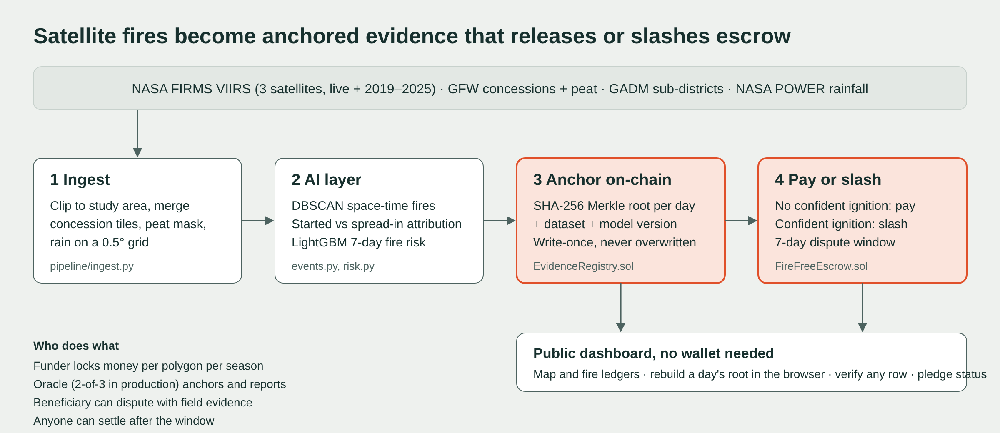

Satellite-verified peat fire evidence anchored on Ethereum, and a smart contract that pays communities only when the satellites confirm their land stayed fire-free.
From 17 to 24 October 2026, NASA satellites recorded 58,466 fire detections in one corner of Central Kalimantan. The haze has hit Indonesia, Malaysia and Singapore since September. Satellites see every fire; what fails is attribution (fires cross boundaries and evidence is contested) and incentives (paying villages to stay fire-free works, but runs on one company's paperwork). Each hectare of drained peat that burns emits about 800 tCO₂e (IPCC 2013 Wetlands Supplement).

| Polygon | Satellites show | Outcome |
|---|---|---|
| Karau Kuala sub-district | No fire, 84% peat | Paid to village |
| Concession GFW-OP-817 | No fire, 99% peat | Paid |
| Concession GFW-OP-877 | 5 confident ignitions | Slashed to pool |
| Concession GFW-OP-799 | 1 ignition at 0.71, 2 spread in | Disputed |
Demo pledges with test ETH; not commitments by, or accusations against, the named organisations.
A village, a funder and a regulator who distrust each other need one record nobody can edit, and payment that happens automatically on the outcome. APRIL's Fire Free Village pilots cut burnt area 90% for about US$30,000 per village; keeping 1,000 ha of peat from burning at that cost is under US$0.04 per tCO₂e. Users: village fire-care groups, plantations, commodity buyers (EUDR, RSPO), Indonesia's environment ministry, haze regulators, results-based climate finance. Next: a 2027 regency pilot with a 2-of-3 oracle set. NASA FIRMS is global, so the same pipeline covers every peatland.
Write-once roots, oracle allow-list, reentrancy guard, no double settlement, funder refund if the oracle disappears, dispute window, spread-in fires never count, 0.70 confidence floor. Residual risk is the single oracle; production uses a staked multi-party oracle and multisig arbiter.
Concession maps are from 2012. Attribution confidence is a published heuristic, not a trained classifier, because no labelled ground truth exists yet. A 7-day window censors long-burning fires, which are flagged and down-weighted. VIIRS misses small, cloud-covered and smouldering fires.